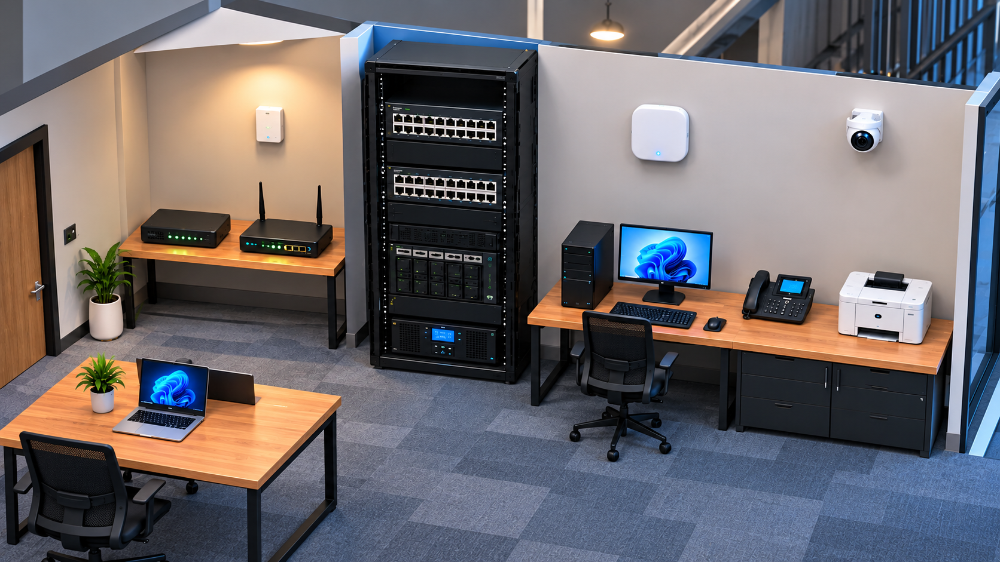

Level 1
Connect the Office Network
- Establish the internet uplink
- Supply backup power
- Bring all 8 devices online
Progress
0 / 8 office devices online
0 / 14 connectionsPatch Panel Rack infrastructure
Cables & Tools Choose a cable, then click two ports
Selected Item
Ethernet (Cat6)
Carry network traffic. The PoE switch also powers the access point, phone, and camera.
Choose a cable below, then click its source and destination ports. Progress saves automatically.